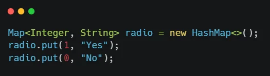

Tại sao nên thi chứng chỉ?
Mình thi chứng chỉ rất nhiều, 6 cái trong 2 năm và nó thực sự đã thay đổi mình rất nhiều, phần lớn là tích cực.
Tại sao bạn không thi?
Khi đi phỏng vấn, mỗi lần gặp những ứng viên có khả năng, mình luôn đặt câu hỏi về dự định tương lai có thi chứng chỉ gì không. Câu trả lời, đa phần là không. Tại sao?
“Tôi thấy nhiều người có chứng chỉ nhưng làm không tốt”
“ Làm không tốt “, hay nói thẳng ra, chính là thua kém bạn đó. Bạn đó là một người rất trẻ, người mà bạn đó đang nói đến là những đồng nghiệp đã có chứng chỉ và có nhiều năm kinh nghiệm hơn bạn đó, nhưng bạn đó cảm thấy là những người đó chưa tốt bằng mình.
Thực sự thì bạn đó nói không hề sai. Chứng chỉ không phải vạn năng, vượt qua những bài thi 60 phút cho đến 3 tiếng không chứng tỏ được rằng bạn biết tất cả mọi thứ.
Nhưng bạn đó nói cũng không hề đúng. Anh kỹ sư tốt nghiệp trường đại học nông nghiệp danh tiếng chưa chắc đã cấy lúa hay trồng cây nhanh và chuẩn được như bác nông dân lành nghề. Tuy nhiên, anh kỹ sư có thể học được cái đó rất nhanh, trong khi bác nông dân sẽ rất lâu mới có thể học được những kỹ thuật khoa học tiên tiến mà anh kỹ sư được đào tạo.
Anh kỹ sư không thể thiếu bác nông dân để làm giúp anh, nhưng bác nông dân nếu thiếu anh kỹ sư thì công việc cũng sẽ không đạt được hiệu quả cao nhất. Hai người không loại trừ lẫn nhau mà bù trừ cho nhau.
Nếu bạn có chứng chỉ, hãy tiếp tục thực hành thật nhiều. Còn nếu bạn đã thực hành một cách thuần thục rồi, sao không thử thi một cái chứng chỉ, biết đâu ngoài kia còn nhiều thứ bạn chưa được thực hành thì sao.
“Vì nó không giúp ích gì cho tôi”
Thực sự thì chứng chỉ thật sự có ích đấy. Nó vừa là cách để bạn học kiến thức mới, hoặc bổ sung thêm kiến thức cũ và quan trọng hơn cả là làm tăng cơ hội thăng tiến trong sự nghiệp cũng như thu nhập cho bạn.
“Vì sợ”
Đây là lý do mình đưa ra và mình cho là nhiều người đang mắc phải. Đúng. Thi chứng chỉ rất đáng sợ. Nào là tiếng Anh, cảm giác thi cử thời còn đi học, thời gian, tiền bbạc, áp lực về kết quả,… có quá nhiều thứ phải sợ. Thật khó để đánh bại nỗi sợ, nhưng biết đâu, sau khi đọc những thứ dưới đây, bạn sẽ có thêm can đảm.
Vậy tại sao bạn nên thi?
Chắc chắn là đoạn trên chưa làm bạn thuyết phục, vậy sao không thử xem những lý do dưới đây.
Giúp bạn đi đúng hướng
Mình vẫn còn nhớ mãi trong quá trình làm dự án trong quá khứ, team mình bị khách hàng báo một lỗi, lỗi về hiển thị.
Lỗi đó xuất phát từ việc khách hàng phàn nàn về việc thứ tự của radio đang không đúng. “ Yes” phải đứng trước “ No “. Cả team đã kiểm tra đi kiểm tra lại trong code, thử nghiệm trên máy và khẳng định là không thể có lỗi đó
Đây là đoạn code

Làm sao mà lỗi được! Cả team, gồm những dev Java đều từ 3 năm kinh nghiệm trở lên, thậm chí là 6–7 năm.
Và sự thực là nó có lỗi. Lỗi xuất phát từ cơ chế của HashMap thực hiện khác nhau trên môi trường Window OS (máy của dev) và Linux distro (môi trường của khách hàng). Team đã có được một bài học.
Trên thực tế, là những team mình làm, hoặc những team của các bạn, sẽ không ngừng vấp phải những sai lầm hết sức cơ bản như vậy. Nó có đáng không? Không hề, vì nó rất cơ bản. Nhưng tại sao lại nhiều người vấp phải, dù đã nhiều năm kinh nghiệm? Vì khi bước chân ra khỏi cổng trường là các bạn đã ngừng học (một cách thật sự). Xem vài cái Getting Startted, Tutorial là các bạn tự cho mình là biết tuốt rồi. Lỗi à? Tra Google cái là ra! Vậy là, kiến thức học được chủ yếu thông qua những “vết xe đổ”, càng làm càng sai sẽ càng rút ra kiến thức, và rồi câu chuyện trở thành, thi xem ai “ đổ xe “ nhiều hơn ai. Vậy làm sao để tránh được những lỗi cơ bản? Đó chính là phải học, học theo khuyến khích của chính những đưa ra chương trình học, và các bài thi để đạt chứng chỉ, chính là chỉ dẫn tốt nhất cho bạn biết nên học cái gì là đủ.
Muốn bắt đầu với Amazon Web Service (AWS)? Hãy bắt đầu với chứng chỉ Foundational, nó sẽ cho bạn một cái nhìn toàn cảnh nhất về AWS. Muốn bắt đầu làm việc tốt với nó, hãy tiếp tục với Associate. Còn nếu bạn muốn làm được những việc chuyên sâu hơn nữa, thậm chí là nghiên cứu, phát triển những thứ Google không biết, hãy đến với Professional. Có bạn sẽ cho rằng, dù không học chứng chỉ, tôi vẫn học được. Nhưng thật ra nói và làm là hai vấn đề rất khác nhau. Trên thực tế thì hầu hết mọi người khi biết một chút về những khái niệm, hoặc làm việc một chút với EC2, S3, RDS,… thường cho rằng mình biết hết rồi, “ AWS à, có gì đâu, khó thì tra Google thôi “. Mình có tiếp xúc với một team làm dự án rất lớn, rất quan trọng về tính bảo mật, trên môi trường AWS. Điều đáng tiếc là họ không biết nhiều về AWS, và họ cứ làm, họ thấy chạy ổn, họ hài lòng,…cho đến khi bị hack. Ở đó, không ai nói cho họ thế nào là đúng, thế nào là sai, họ chỉ thấy hiện tại mà không thể nhìn ra rủi ro trong tương lai. Khi bạn cứ đi một con đường mù mờ, không có chỉ dẫn, bạn sẽ không biết thế nào là sai, bạn cần làm cái gì và bạn cần làm nó như thế nào.
Để đạt được chứng chỉ, bạn được yêu cầu phải biết những thứ, mà người cung cấp dịch vụ (Ví dụ Amazon) muốn bạn biết, những thứ đó về cơ bản sẽ giúp bạn sử dụng những dịch vụ của họ một cách đúng đắn và hiệu quả nhất (điều này cũng tương tự với các bên thứ ba cấp chứng chỉ). Nếu học, bạn sẽ biết rằng S3 không thích hợp với tần suất truy suất lớn ngay từ khi thiết kế, chứ không phải “go live” rồi mới biết và lại phải phá bỏ mọi thứ đã làm. Hoặc lúc đó bạn sẽ biết Amazon EC2 không phải lựa chọn duy nhất, vẫn còn đó AWS Lambda, AWS ECS, AWS Beanstalk, Elasticache,… sẽ thích hợp hơn EC2 trong một số trường hợp.
Những kiến thức ở ngoài kia, bao la rộng lớn, và nó không hề có chương trình học như khi bạn ngồi trên ghế nhà trường, bạn có quyền tự do khám phá, bạn sẽ rất lạc lối, sai lầm và vấp ngã. Và những chứng chỉ, chính là thứ sẽ dẫn lối cho bạn đi đúng trên con đường. Nhưng dù bạn có đi đúng con đường, vẫn sẽ còn đó những trở ngại, nhưng chắc chắn, không bao giờ nhiều hơn khi sai đường.
Có lợi trong công việc
Giả sử đang có hai CV, một người đã có chứng chỉ Professional Scrum MasterTMlevel I (PSM I) , sau khi ôn chỉ trong vòng 4 ngày, với một người đã học Scrum trong 2 tháng. Mình chắc chắn sẽ chọn người đã có chứng chỉ. Tại sao?
Có chứng chỉ, tức là đã hiểu thật sự.
Giờ một anh đẹp trai và một anh có học thức, các cô sẽ chọn anh nào? Thường sẽ chọn anh giàu nhất. Học 1 tuần. 1 tháng hay 1 năm không có nghĩa là học nhiều sẽ biết nhiều hơn, nhưng chắc chắn, có chứng chỉ là đủ. Chẳng ai biết người học 1 năm kia học được những gì, hiểu được đến đâu. Nói học tiếng Anh 10 năm thì ai cũng nói được mà chưa chắc đã tin là biết tiếng Anh, nhưng nói có IELTS 6.0 thì người ta sẽ không hỏi gì thêm nữa.
Mọi người có xu hướng tự tin về kiến thức của mình thái quá, có thể là do họ làm vậy để nhà tuyển dụng có cái nhìn tích cực về họ, cũng có thể họ thực sự coi mình là Mr. Biết tuốt. Chẳng có gì chắc chắn để nói rằng người có chứng chỉ sẽ giỏi hơn người không có, nhưng rõ ràng có chứng chỉ thì đáng tin hơn là nghe nói suông rồi. Vậy nên, có chứng chỉ, thực sự sẽ dễ dàng để tìm kiếm việc làm, cũng như nâng cao mức thu nhập hơn.
Sự tin tưởng từ khách hàng
Sếp của bạn làm việc lâu vớ bạn có thể nhận xét rằng: “ Anh này giỏi lắm, cái gì cũng làm được! “, nhưng khách hàng đâu có làm việc với bạn, họ sẽ không biết được điều đó cho đến khi làm việc với bạn!
Sự thật là như vậy! Rất khó nói với khách hàng rằng nhân viên này thông minh, sáng dạ, có thể làm cái này cái kia, chẳng ai có thể chứng thực những điều đó cả. Tuy nhiên, chứng chỉ lại là một thứ đã được chứng thực và đáng để tin tưởng hơn cả. Có nhân viên có chứng chỉ, khả năng bid được dự án cao hơn, khách hàng tin tưởng hơn, từ đó công ty có lợi và sẽ ưu tiên chứng chỉ hơn cả.
Thay đổi suy nghĩ
Cách đây 2 năm, mình thi chứng chỉ Java đầu tiên trong đời. Thực sự trước đó, mình rất tự tin với vốn kinh nghiệm cũng khá nhiều năm của mình (4 năm kinh nghiệm). Cho đến khi mình bắt đầu thi Java Associate, vâng, chỉ là Associate thôi nhưng mình đã cảm thấy còn rất rất nhiều điều mình không hề biết, những điều tuy nhỏ nhặt nhưng cũng rất quan trọng. Sau khi đã có chứng chỉ Associate, thiết nghĩ vẫn còn nhiều kiến thức mà chứng chỉ này chưa bao quát hết, thế là mình học tiếp Professional. Đến lúc này thì mình mới hiểu là mình chẳng biết gì về Java cả. Rất nhiều thứ hay ho mình không hề biết đến., vâng, rất rất nhiều thứ.
Từ đó, mình thay đổi suy nghĩ thực sự. Kiến thức chúng ta đã học được, hay đã làm được, dù bao nhiêu năm đi chăng nữa, vẫn quá nhỏ bé. Chúng ta luôn đi theo lối mòn qua nhiều năm, sợ những hướng đi khác, sợ thay đổi, sợ mọi thứ.
Bạn không hề có 10 năm kinh nghiệm, bạn chỉ có 1 năm kinh nghiệm và dùng nó 9 năm thôi
Có chứng chỉ cũng không phải tất cả. Dù nắm trong tay chứng chỉ Professional, nhưng mình chưa bao giờ nghĩ mình đã biết đủ, đó mới chỉ là sự khởi đầu và kiến thức vẫn còn rất bao la phía trước cần được khám phá.
Trở thành mục tiêu học
Khi không có một mục tiêu rõ ràng, chúng ta rất dễ bỏ cuộc.
Nào chúng ta cùng học AWS! Mục tiêu là học hết về AWS. Tuần này sẽ học EC2, tuần sau là S3, tuần sau nữa là RDS,… Học chưa được một tuần, ai cũng bỏ. Học cái này chán quá! Học để làm gì? Làm được cái gì?
Vẫn là học, nhưng nếu đặt mục tiêu chứng chỉ thì mọi thứ sẽ rất khác. Bạn đã có hướng đi, bạn đã có mục tiêu, việc của bạn chỉ là bước tiếp trên con đường đó để về đích.
Sau khi đã có 2 chứng chỉ Java 8 được 2 năm, mình nghĩ đã đến lúc học Java 11, hiện đang bắt đầu được các khách hàng chú ý hơn khi phát triển dự án. “Phải học thôi! “, mình tự nhủ thế. Và rồi mình bắt đầu xem Youtube, search Google xem Java 11 có gì mới. Kết quả là, việc đó chỉ diễn ra trong 2 tiếng. Mình quên hết vào ngày hôm sau và chẳng thể làm gì ra hồn.
“ Phải có chứng chỉ Java 11! “.
Thế là mình bắt tay vào học trong một tháng, mua sách về đọc, đọc kỹ tài liệu của Oracle và làm nhiều bài Practive test. Kết quả là, mình thi đỗ chứng chỉ và mình vẫn nhớ như in mọi thứ.
Hay như bắt đầu năm 2019, mình không hề biết gì về AWS cả. Chưa bao giờ được ai dạy, chưa bao giờ làm dự án nào mà mình được dùng AWS. Thay vì ngồi mày mò tìm hiểu như nhiều người, mình đặt luôn mục tiêu là một chứng chỉ Professional. Việc đó rất khó với mình, và mình phải mất cả năm mới đạt được. Nhưng đổi lại, hiện giờ, mình nắm khá tốt kiến thức về AWS, trải rộng trên rất nhiều service, hiểu và có thể đưa ra được nhiều giải pháp kỹ thuật sử dụng AWS. Nếu mình chỉ đặt mục tiêu chung chung là “ học AWS* “, có lẽ sẽ không được như hôm nay đâu.
() Năm 2015 đến 2017 mình thực sự có làm một dự án có sử dụng EC2 và RDS. Tuy nhiên, trên thực tế chỉ là khách hàng họ cung cấp ssh key để mình SSH vào EC2 như một server và credential để mình dùng RDS như một database bình thường, do đó, mình gần như không có khái niệm gì về AWS cả.*
Vậy đó, khi học bất cứ cái gì, bạn cần có một mục tiêu rõ ràng. Mục tiêu sẽ tiếp cho bạn sức mạnh biến điều không tưởng thành sự thật.
Mặt trái
Thi chứng chỉ cũng có cái hại, không chỉ tốn thời gian, mà đặc biệt nguy hiểm hơn cả, chính là tốn tiền.
Thi chứng chỉ thực sự rất tốn tiền. Lệ phí thi thường từ $100 trở lên, thậm chí có những chứng chỉ là $300 đến cả ngàn USD, rất tốn kém. Nhưng như thế là chưa đủ, bạn còn phải mua tài liệu, mua khóa học. Khóa học thì cũng khá vô biên, từ $10 cho đến vài trăm USD, thậm chí là đăng ký hàng tháng cả trăm USD mà học vài tháng lận.
Thi cũng tốn của bạn rất nhiều thời gian. Bạn sẽ tốn hàng nhiều giờ mỗi ngày để ngồi học, tốn cả tháng, cả năm, thậm chí là nhiều năm để đạt được. Cảm giác chán nản, lo âu, áp lực và căng thẳng sẽ luôn đeo bám bạn. Liệu bạn có thể vượt qua? Còn xem bản lĩnh của bạn đến đâu.
Kết luận
Với mình, thi chứng chỉ không chỉ vì những lý do trên, mà còn vì nó là sự thử thách, thậm chí có những cái là thử thách tột độ. Cuộc sống sẽ thật nhàm chán nếu không có gian nan thử thách. Người xưa có câu “ Qua cơn bĩ cực đến hồi thái lai “. Đến những khó khăn thử thách nhất bạn cũng có thể vượt qua thì chẳng có gì có thể làm khó bạn được nữa.